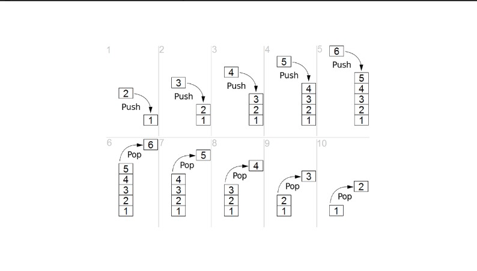

Stack
Stack adalah kumpulan item yang tersusun rapi di mana penambahan item baru dan penghapusan item yang sudah ada selalu dilakukan pada ujung yang sama. Ujung ini biasanya disebut “top” (atas). Ujung yang berlawanan dari top disebut “base” (dasar).
-> Prinsip urutan ini disebut LIFO / FILO, yaitu last-in first-out / first-in last-out (yang masuk terakhir keluar pertama).
Operasi pada Stack:
Stack() → membuat stack baru yang kosong. Tidak butuh parameter dan menghasilkan stack kosong.
push(item) → menambahkan item baru ke bagian atas stack. Membutuhkan item dan tidak mengembalikan apa pun.
pop() → menghapus item paling atas dari stack dan mengembalikannya. Tidak butuh parameter. Stack berubah.
peek() → melihat item paling atas tanpa menghapusnya. Stack tidak berubah.
isEmpty() → mengecek apakah stack kosong. Menghasilkan nilai boolean (benar/salah).
size() → mengembalikan jumlah item dalam stack (bilangan bulat).
Penting: jika stack kosong di pop maka akan menghasilkan stack underflow.

Implementasi Python:
python
stack = []
kosong = not bool(stack)
print("isEmpty:", kosong)
stack.append (10)
stack.append (15)
stack.append (20)
print("push", stack)
peek = stack[-1]
pop = stack.pop()
stack.append (25)
print("peek", peek)
print("pop", pop)
print("push", stack)
print("size", len(stack))